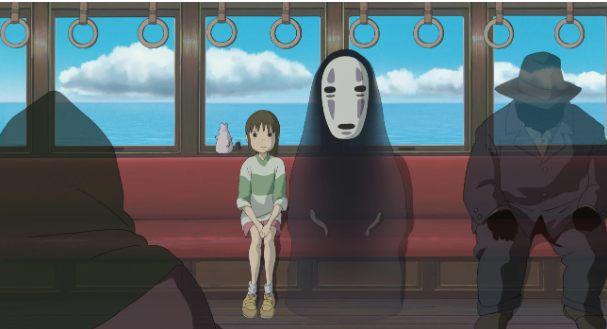
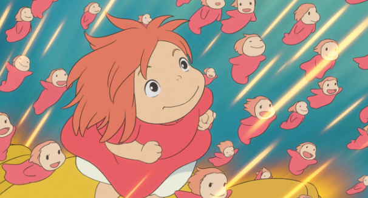
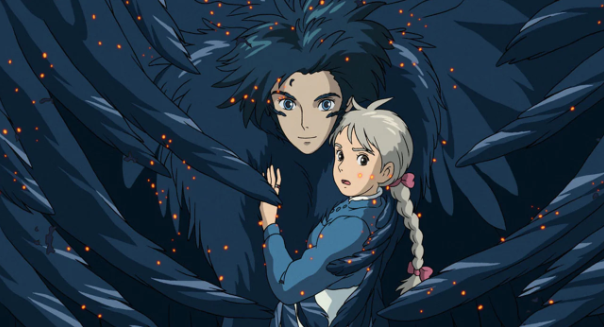
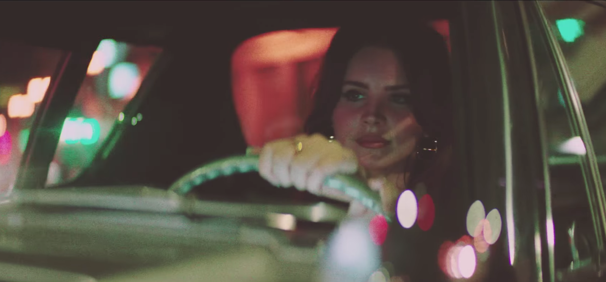
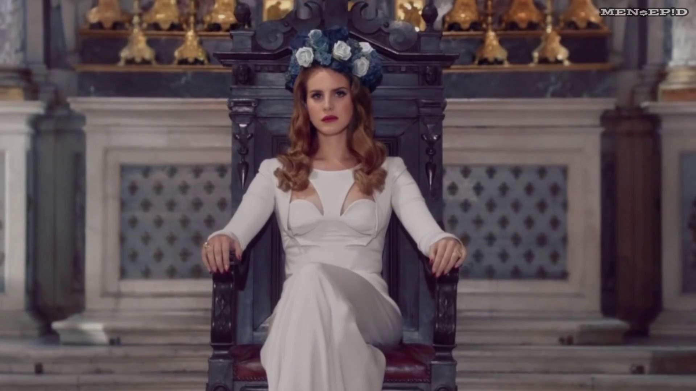
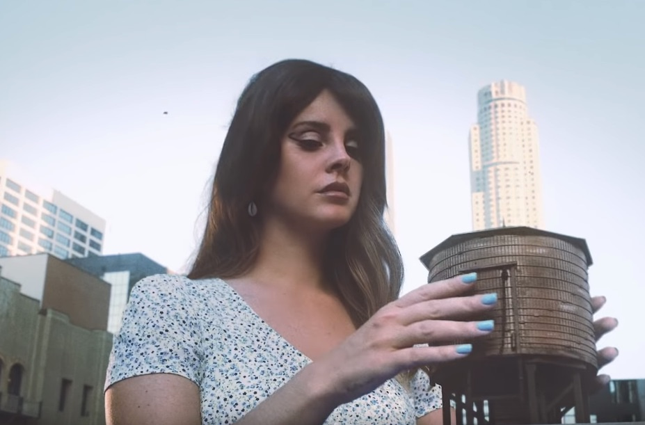
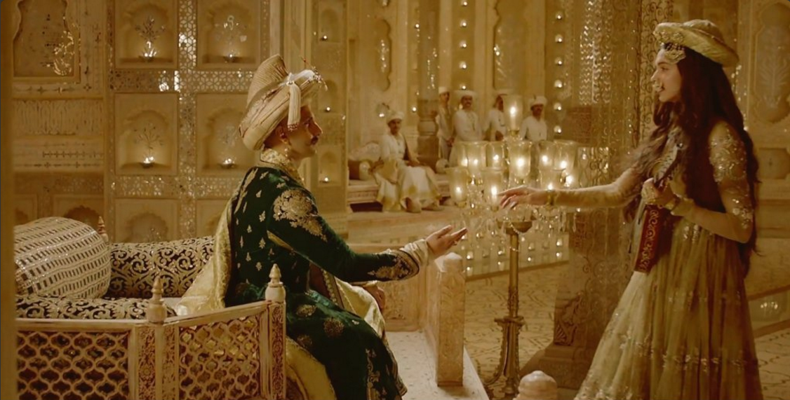
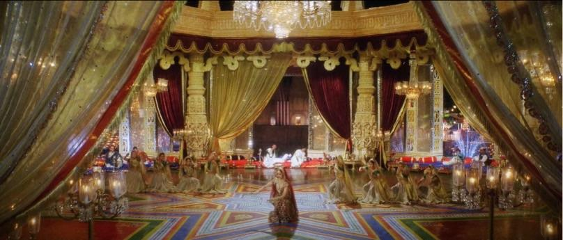
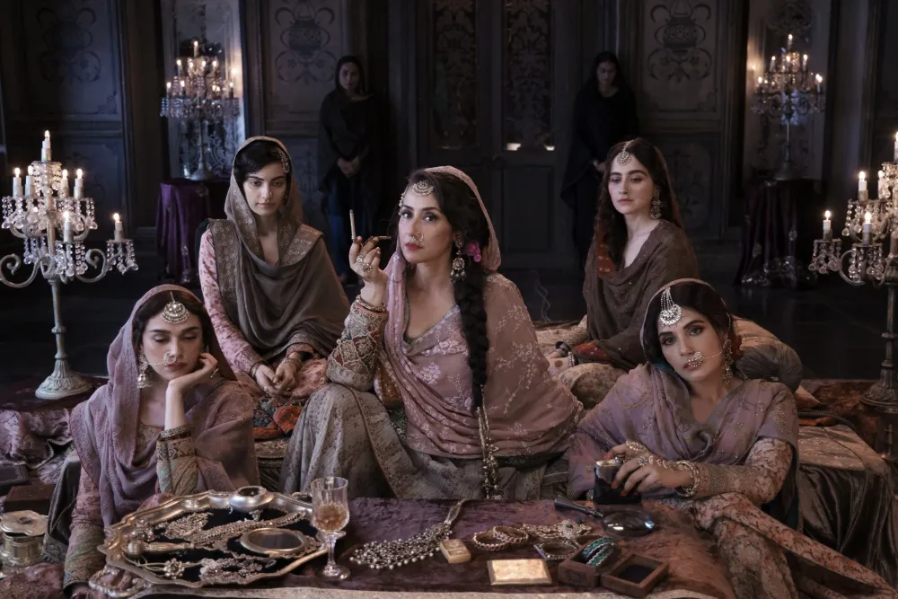

Miyazaki is a visionary director and one of the co-founders of Studio Ghibli, a popular animation studio who is well known for producing films such as Spirited Away, Ponyo, and Howl's Moving Castle, among many others.
What inspires me about his work under Studio Ghibli is the use of vibrant colors in various scenes as well as unique storylines that make for entertaining films.
The use of animation also brings more life to the characters as well as the colorful backgrounds making them stand out to viewers.
This has been a strong sense of inspiration for me, as I have recently watched Howl's Moving Castle for the first time during their yearly Ghiblifest event.



Lana Del Rey is an American singer and songwriter. Her music is known for its cinematic quality and exploration of tragic romance, glamour, and melancholia.
Her lyrics often explore themes of love, loss, resilience, and self-discovery, resonating deeply with listeners who find beauty in melancholy.
I personally find inspiration in the various atmospheres she pictures with her songwriting and production of her music, as they encourage introspection and creativity,
while her cinematic production and haunting melodies evoke a sense of escapism. When hearing her music, I feel a new set of emotions for every song she makes in her albums.
Some songs I feel melancholic, and some I feel euphoria and even have a sense of nostalgia from the themes and explores.



Bhansali is one of the most famous directors in Bollywood, and has the industry's most iconic films under his belt.
Various titles include Devdas (2002), Bajirao Mastani (2015), and his recent Netflix series Heeramandi (2024).
From his affluent set designs and breathtaking cinematography to the soul-stirring soundtrack, it leaves viewers like myself with the embracing of beauty, ambition, and self-expression.
Bhansali’s films are a testament to the power of dreams, artistry, and emotional intensity, leaving a lasting impression on those who experience them.
As someone who's grown up with a family that has a deep appreciation for Bollywood, I have always been familiar with his work, as they have been a major factor in my consumption of media from a young age.